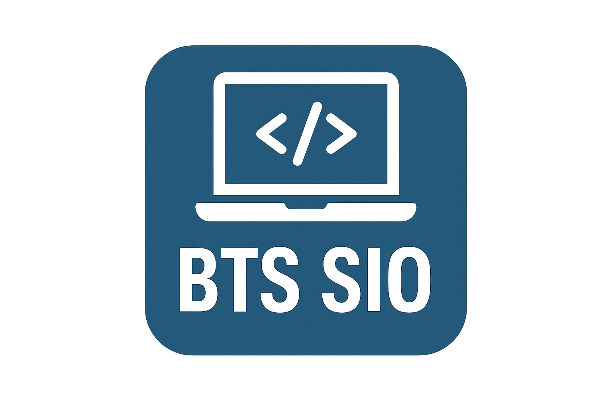
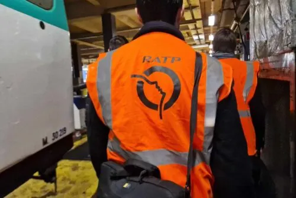
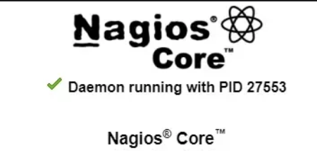
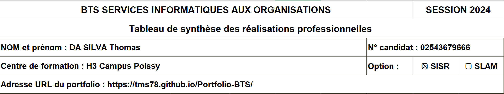

Étudiant de 19 ans en informatique, je me spécialise dans les infrastructures réseaux et la cybersécurité. Curieux et rigoureux, j'aime comprendre le fonctionnement "sous le capot" des systèmes pour les optimiser et les sécuriser.
Après un BAC Général (Spécialités HGGSP & SVT) qui m'a apporté un esprit d'analyse, j'ai choisi de m'orienter vers un BTS SIO option SISR. Actuellement en 2ème année, j'y développe mes compétences en administration système, virtualisation et sécurité des réseaux.
J'effectue actuellement mon alternance au sein de la RATP pour une durée de 2 ans. Cette immersion au cœur d'une grande infrastructure me permet de mettre en pratique mes connaissances théoriques sur des problématiques réelles et d'apprendre la rigueur du travail en équipe.



Télécharger le Tableau de synthèse ↓